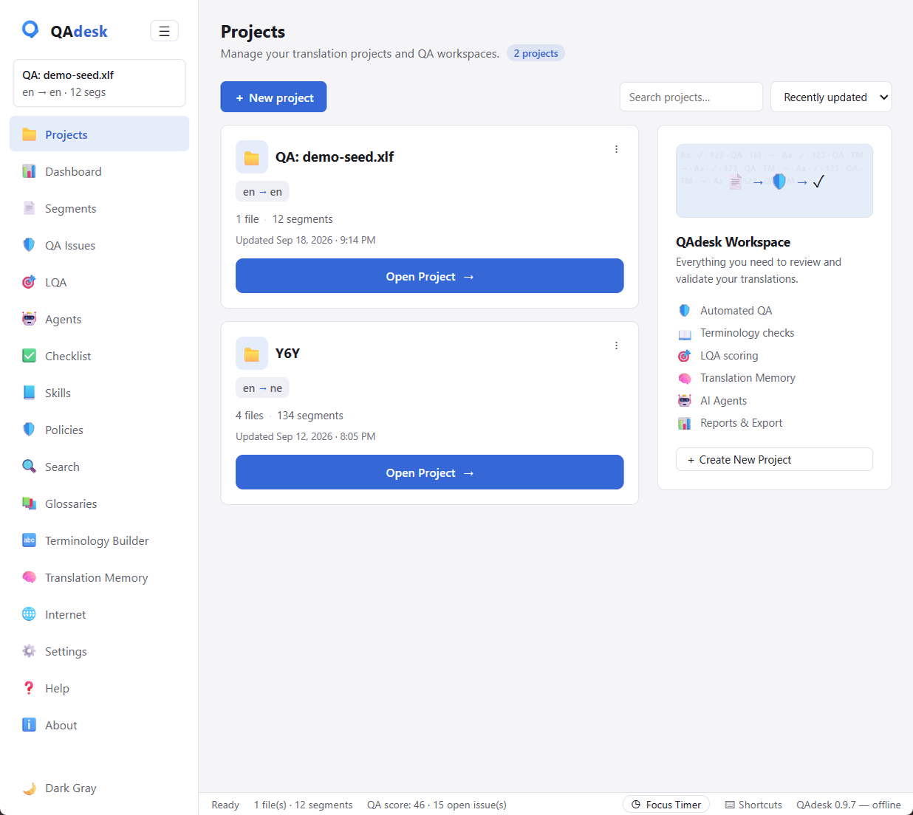
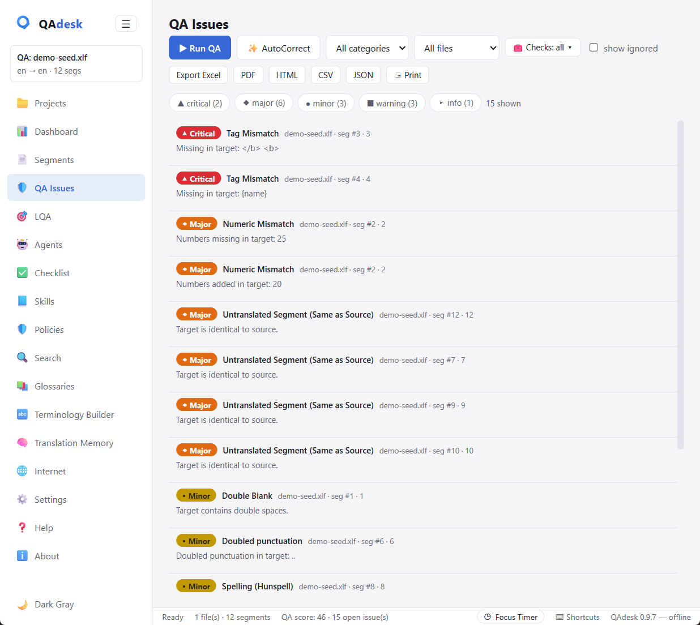
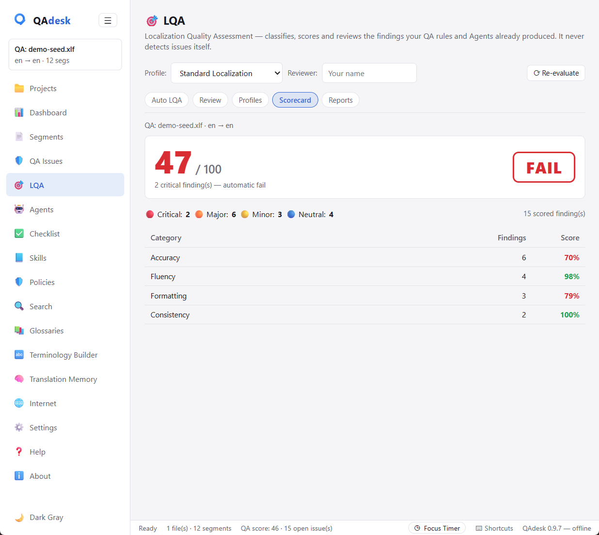
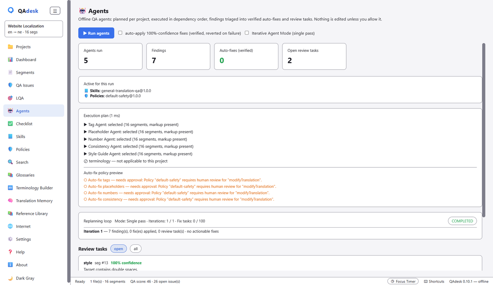

Documentation
Everything you need to import a file, run QA, and deliver a scored report. The full reference guide also ships inside the app under Help.
Quick start
QAdesk works in four moves: import a bilingual file, run QA, review and fix the findings, then score and export a report. No account, no setup — it opens straight to your projects.
- Open QAdesk and drag a file onto the Projects view (or use Import).
- Press ▶ Run QA from the Dashboard or the QA Issues view.
- Work down the issue list — jump to segments, ignore false positives, apply safe fixes.
- Score against an LQA profile and export the report.
Importing files
Drop in whatever your CAT tool speaks. QAdesk lines up source and target automatically and shows the segment grid. Supported formats include XLIFF, SDLXLIFF (Trados), MQXLIFF (memoQ), Phrase/Memsource, Wordfast, TMX, TBX, SDLTB, SDLTM, Excel (XLSX), CSV, PO, JSON, SRT and Trados RTF.
You can also enable Windows Explorer integration in Settings, then right-click any file and choose “Run QA with QAdesk” to import and check in one step.

Running QA
Press ▶ Run QA to run all 32 language-neutral checks over every segment. Findings are sorted so the most severe come first, and each carries the segment number and the CAT-tool unit id so anyone can locate it.

Reviewing issues
Click any issue to see its details. From the detail panel:
- ↦ Go to segment — jump straight to that segment.
- Next → — step to the next issue in the list (the n / ↓ keys do the same).
- ✕ Ignore issue — mark a false positive; it stays ignored on future QA runs, and the panel advances to the next issue automatically.
Filter the list by severity, category, file, or check type to focus. QAdesk is careful about false positives: tags, URLs, and source-carried names that legitimately match the source are not flagged as “untranslated”.
LQA scoring
The LQA view grades a file against a quality profile and returns a straight PASS / FAIL with the breakdown behind it — turning your file into a quality report you can hand a client.

Agents & AutoCorrect
Six built-in agents — Terminology, Tag, Placeholder, Number, Consistency and Style Guide — propose fixes, tell you their confidence, and, with your permission, apply the certain ones and verify their own work. Deterministic, safe fixes (double spaces, doubled punctuation, spacing) can be applied in one click via AutoCorrect, with undo. Nothing changes without your say-so.

Glossaries & TM
Attach term bases (including SDLTB) and translation memories (including SDLTM) to check terminology compliance and run concordance searches. Required-term and forbidden-term checks run against your glossaries on every QA pass.
Skills & Policies
Skills capture how a language or client should be handled. Policies set hard limits the agents can't cross — ideal for sensitive medical or legal work. Configure them once and every file is held to your standard automatically.
Reports & export
Export findings to Excel (color-coded, Xbench-style header), PDF, HTML, CSV or JSON — or print directly through the system dialog. Bilingual export, conversion, and write-back to the original file are built in.
The 32 checks
QAdesk ships 32 language-neutral checks across these categories:
- Basic — empty/untranslated target, same-as-source, repeated words.
- Numbers — numeric mismatch, percentages, currency (digit-system & locale aware).
- Tags & placeholders — missing/extra tags, tag order, malformed placeholders, broken markup.
- Punctuation — terminal punctuation, unbalanced brackets/quotes, doubled or misplaced punctuation.
- Casing — ALL-CAPS and CamelCase preservation.
- URLs & whitespace & Unicode — URL/email integrity, spacing, line breaks, tabs, NFC, invisible characters.
- Consistency & terminology — inconsistent translations, glossary compliance.
- Length — suspicious expansion/contraction ratios.
- Spelling — Hunspell spelling when a dictionary is loaded.
Privacy & offline
QAdesk runs entirely on your machine — no account, no cloud, no telemetry. Your clients' files never leave your computer. An optional AI assistant runs locally through Ollama if you want it.